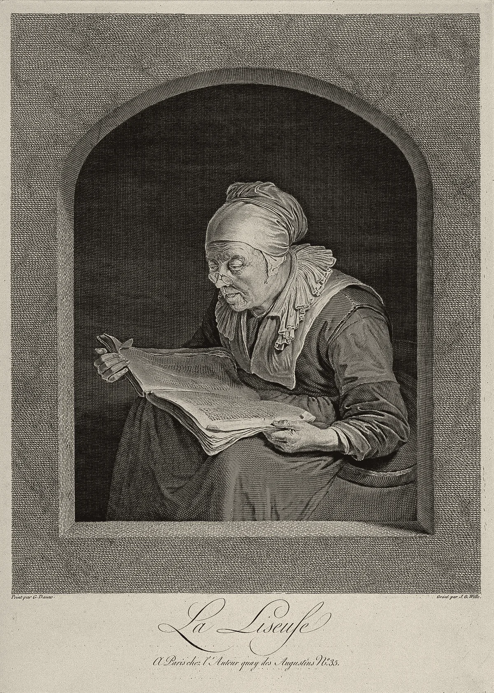

· Edición 42 · 6 min de lectura
En 2036 Colombia tendrá más mayores de 60 años que niños: quién los va a cuidar y qué hicieron Japón y Uruguay

Grabado de Jean-Georges Wille, siglo XVIII, a partir de Gerrit Dou · CC BY 4.0, Wellcome Collection, vía Wikimedia Commons
En 2036 Colombia tendrá más mayores de 60 años que niños: quién los va a cuidar y qué hicieron Japón y Uruguay
Ver todo el tema, de principio a fin →
En pocas palabras. El mundo envejece: en 2050 habrá unos 2.100 millones de personas de 60 años o más, el doble que en 2020, según la OMS. Colombia lo vive más rápido que los países ricos, y lo que nos toca es concreto: casi todo el cuidado de los mayores lo hacen las familias, sobre todo las mujeres, sin pago. Japón y Uruguay crearon un sistema público de cuidado. Aquí la ley que lo crearía está en el Congreso, sin fecha de debate.
El dato curioso. Desde 1963, el Gobierno de Japón le regala una copa de sake de plata a cada persona que cumple 100 años. Ese primer año había 153 centenarios en todo el país. En 2014 las copas ya costaban unos 260 millones de yenes, porque casi 30.000 personas llegaron al siglo, y el Ministerio de Salud y Bienestar empezó a estudiar un regalo más barato. En septiembre de 2026, Japón contó 107.677 centenarios, por primera vez más de 100.000. Casi nueve de cada diez son mujeres.
Qué está cambiando. De cada 100 colombianos, 6 tenían 60 años o más en 1985, según los censos del DANE. En 2018 eran 13, y en 2050 serán unos 25, según sus proyecciones. Hoy son 8,1 millones de personas; en 2050 serán 13,7 millones. Y hacia 2036, por primera vez, habrá más mayores de 60 que menores de 15, según la directora del DANE, Piedad Urdinola.
Fuente: DANE, censos de 1985 a 2018 (citados por UNFPA) y proyecciones de población
Ver datos
| % | |
|---|---|
| 1985 | 6 |
| 1993 | 6,9 |
| 2005 | 9 |
| 2018 | 13,2 |
| 2050 | 24,6 |
Por qué.
- Se vive más. Es la mejor noticia del siglo y la causa principal.
- Nacen menos niños. Cada generación nueva es más pequeña que la anterior.
- Va rápido. Corficolombiana, el área de análisis de un grupo financiero, calcula que la edad promedio de los colombianos subirá unos 12 años en tres décadas, un salto que antes había tomado 75 años.
Qué significa para Colombia.
- El cuidado en casa. Cuidar y atender el hogar sin pago equivalió en 2024 al 19,9% de toda la economía, según el DANE. Las mujeres pusieron 76 de cada 100 horas: 23,5 a la semana, frente a 8,6 de los hombres.
- La demanda que viene. En América Latina, unos 8 millones de personas de 65 años o más necesitan ayuda en actividades básicas, como comer o vestirse; en 2050 podrían ser 23 millones, según un estudio del BID, la OCDE y la AFD. Menos de 20 de cada 100 reciben un servicio público.
- Las enfermeras que se van. Los países que envejecieron primero necesitan trabajadores de la salud. Desde 2021, el Servicio Público de Empleo y la agencia de empleo de Alemania llevan enfermeras colombianas a ese país.
- El sistema sin dueño. El Conpes 4143 de 2025 trazó una Política Nacional de Cuidado a diez años y la puso en el Ministerio de Igualdad. La Corte tumbó la ley que creó ese ministerio, el Congreso no la rehízo a tiempo y en junio el Gobierno ordenó liquidarlo. Sus funciones pasaron a Interior y a Prosperidad Social, sin recursos adicionales.
Quién se está preparando.
- Japón. En 2000 creó un seguro de cuidados: desde los 40 años todos pagan una cuota, y a quien se le certifica que necesita ayuda se le paga el cuidado en casa o en un hogar; el usuario pone entre el 10% y el 30%. Un estudio de 2017 en el Journal of Health Economics, con datos nacionales, encontró que el seguro aumentó el empleo de los familiares que cuidaban.
- Uruguay. Una ley de 2015 creó un sistema nacional de cuidados que, entre otras cosas, paga un asistente personal a quien tiene dependencia severa: unas 4.000 personas lo tenían en sus primeros años.
- Bogotá. Sus 27 Manzanas del Cuidado ofrecen formación y servicios a las mujeres que cuidan. Entre 2021 y junio de 2025 atendieron a unas 912.000, según la Alcaldía.
Pero ojo.
- Cuesta, y cada vez más. En Japón, el gasto del seguro pasó de 3,6 billones de yenes en 2000 a 11,7 billones en 2019, y la cuota mensual de los mayores se duplicó.
- La cobertura se queda corta. Un diagnóstico del BID de 2026 encontró que el sistema uruguayo sigue limitado por edad y grado de dependencia.
- Contar no es evaluar. Las cifras de Bogotá son de la Alcaldía: cuentan atenciones, no cuánto tiempo les devolvieron a las cuidadoras.
- Las proyecciones cambian. El DANE las revisa con cada dato nuevo de nacimientos y migración. El año del cruce puede moverse; la dirección, no.
- Envejecer no es depender. (Conocimiento general: la mayoría de las personas de 60 a 75 años se vale por sí misma, y muchas cuidan a otros.)
Lo que ya habíamos contado. El 16 de octubre escribimos sobre los mayores que no tienen pensión (ver esa edición), y el 22 de octubre, sobre la caída de los nacimientos en las adolescentes (ver esa edición). Hoy, la otra cara de esa cuenta: quién cuida a los mayores.
Qué hacer con esto
Para ir pensando. Quién va a cuidar en la familia cuando haga falta, cómo se reparten el tiempo y el dinero entre hermanos, y en qué casa. Mejor hablarlo antes de la emergencia.
Cómo prepararse. Para la propia vejez: mantenerse activo y pensar en una vivienda sin escaleras. Para quien ya cuida: preguntar en la alcaldía por servicios o formación para cuidadores.
Ojo con el cuento. Un Conpes no es un sistema. Una política sin ley, sin entidad a cargo y sin presupuesto asignado es una intención. La pregunta útil es quién la ejecuta y con qué recursos.
Qué podríamos exigir. Que el proyecto de ley diga de dónde sale el dinero y quién responde, como en Uruguay y Japón.
Dos lecturas
Un sistema público, pagado entre todos. Si el cuidado sigue en las familias, lo pagan las mujeres con su empleo y su salud. Japón muestra que un seguro común puede devolverlas al trabajo.
Primero lo que existe, para quien más lo necesita. Un sistema universal cuesta cada año más, como en Japón. Mejor reforzar lo que hay y concentrarlo en los mayores pobres con dependencia severa.
Quién decide y cuándo
Quién decide. El Congreso. El proyecto de ley 018 de 2026 Cámara, radicado el 20 de julio por un grupo de representantes, crea el Sistema Nacional de Cuidado con su gobierno y sus servicios.
Cuándo. No hay fecha de primer debate. (Conocimiento general: un proyecto no puede tramitarse en más de dos legislaturas; si no se aprueba antes del 20 de junio de 2028, se archiva.)
Cómo participar. (Conocimiento general: las comisiones pueden convocar audiencias públicas sobre un proyecto, y cualquier ciudadano puede enviar comentarios a los ponentes.)
Seguimiento de la decisión
Pendiente · plazo:
Congreso de la República: primero la comisión de la Cámara que reciba el proyecto, luego la plenaria y después el Senado: Aprobar o no el proyecto de ley 018 de 2026 Cámara, que crea por ley el Sistema Nacional de Cuidado, con su gobierno, sus servicios y sus fuentes de financiación.
Radicado el 20 de julio de 2026. No encontramos ponentes ni fecha de primer debate. El plazo es el límite de dos legislaturas que fija la Constitución; si no se aprueba antes, se archiva (conocimiento general).
La paradoja del día
Colombia tiene una política nacional de cuidado aprobada hasta 2034, con un presupuesto indicativo de 25,6 billones de pesos. Lo que no tiene es el ministerio al que se la encargó.
Para conversar
La pregunta. Cuando un mayor de la familia necesite ayuda todos los días, ¿quién debería cuidarlo: los hijos, el Estado o un seguro que paguemos todos desde jóvenes? ¿Y qué podríamos hacer para que esa carga no caiga siempre en la misma persona?
Para leer más
Ser mortal. La medicina y lo que importa al final, de Atul Gawande (Galaxia Gutenberg, 2015, traducción de Alejandro Pradera). Un cirujano estadounidense cuenta cómo cuidamos a los mayores cuando ya no se valen solos, y por qué un buen cuidado empieza por preguntarles qué quieren.
¿Le interesa ver las fuentes?
46 fuentes: 1 académica, 11 oficiales, 2 de datos, 8 de organizaciones, 21 de prensa, 3 de referencia.
- Oficial Organización Mundial de la Salud. Envejecimiento y salud (nota descriptiva)
- Oficial CEPAL. Día Internacional de las Personas de Edad: repensar las políticas públicas para garantizar derechos y dignidad de las personas mayores (1 de octubre de 2026)
- Prensa Nippon.com, con datos del Ministerio de Salud, Trabajo y Bienestar de Japón. Japan's Centenarian Population Tops 100,000 for First Time
- Prensa Naharnet (AFP). Graying Japan Eyes Cheaper Gifts for Centenarians
- Prensa Newshub. Aging Japan eyes cheaper centenary gifts
- Organización UNFPA Colombia, con datos de los censos del DANE. Envejecimiento y derechos de las personas mayores (capítulo 3.3)
- Datos DANE. Proyecciones de población: nota técnica (julio de 2025)
- Prensa Portafolio, con proyecciones del DANE. Colombia tendrá 13,7 millones de adultos mayores en 2050: cada vez habrá menos personas para cuidarlos
- Prensa La República. Los 50 municipios que tienen la población más vieja en Colombia (13 de octubre de 2026)
- Prensa RTVC Noticias. Envejecimiento poblacional en Colombia: Dane proyecta que en 2036 habrá más adultos mayores que niños
- Prensa La República. Desde 2036 habrá más adultos mayores de 60 años que niños entre cero y 14 años
- Prensa Blu Radio, sobre el informe de Corficolombiana. Más canas, menos cunas: ¿cuáles son los retos de la nueva longevidad?
- Datos DANE. Cuenta Satélite de Economía del Cuidado y Cuentas Nacionales de Transferencia del Tiempo, 2024 provisional (comunicado)
- Prensa Forbes Colombia. El trabajo doméstico no remunerado alcanzó 340,5 billones y representó una quinta parte del PIB
- Organización BID, OCDE y AFD (2025). ¿Quién cuida? Cómo apoyar y reconocer a quienes cuidan de personas mayores en América Latina y el Caribe
- Prensa El Diario (Bolivia). El futuro del trabajo pasa también por los cuidados en América Latina (13 de octubre de 2026)
- Prensa La Jornada. Demanda de personas cuidadoras se triplicará para 2050: BID y OCDE
- Prensa El Universal (Cartagena). Alemania abre vacantes para colombianos en enfermería y oficios técnicos
- Organización Banco Mundial (2024). Experiencias de los migrantes del proyecto TEAM entre Colombia y Alemania (informe cualitativo)
- Oficial Ciudad de Yokohama. Long-Term Care Insurance System
- Oficial Ciudad de Tokushima. Long-Term Care Insurance
- Académica Fu, Noguchi, Kawamura, Takahashi y Tamiya, Journal of Health Economics (2017). Spillover effect of Japanese long-term care insurance as an employment promotion policy for family caregivers
- Organización Canon Institute for Global Studies. Finance and the Social Security System (columna, 17 de junio de 2021)
- Oficial IMPO, Uruguay. Ley 19.353: creación del Sistema Nacional Integrado de Cuidados (SNIC)
- Oficial Presidencia de la República Oriental del Uruguay. Sistema Nacional de Cuidados benefició en dos años a 20.000 personas
- Organización BID (2026). El sistema nacional integrado de cuidados en Uruguay: diagnóstico, desafíos y recomendaciones
- Oficial Alcaldía de Bogotá. Bogotá fortaleció su Sistema Distrital de Cuidado y amplió la atención para las mujeres durante 2025
- Oficial Secretaría Distrital de la Mujer de Bogotá. Comunicado de prensa 18 (20 de noviembre de 2025)
- Oficial Departamento Nacional de Planeación. Documento Conpes 4143: Política Nacional de Cuidado
- Prensa El País (Cali). Gobierno aprobó Conpes para implementar el Sistema Nacional del Cuidado; estará a cargo del Ministerio de Igualdad
- Oficial Función Pública, Gestor Normativo. Decreto por el cual se liquida el Ministerio de Igualdad y Equidad (2026)
- Prensa Cambio. Con decreto, el Gobierno formalizó la liquidación del Ministerio de Igualdad
- Oficial Cámara de Representantes. Sistema Nacional de Cuidado (proyecto de ley 018 de 2026 Cámara)
- Referencia Normograma. Proyecto de Ley C018 de 2026 (Legislatura 2026-2027)
- Prensa Ámbito Jurídico. Análisis: Sistema Nacional de Discapacidad y Sistema Nacional de Cuidado, reforma y creación en trámite
- Referencia Revista de Bioética y Derecho, Universidad de Barcelona (reseña). Atul Gawande, Ser mortal. La medicina y lo que importa al final (Galaxia Gutenberg, 2015)
- Referencia Marcial Pons (ficha del libro). Ser mortal, de Atul Gawande
- Prensa Infobae. Un informe de la ONU advierte sobre el calentamiento que el mundo podría alcanzar este siglo (21 de octubre de 2026)
- Organización WWF. Informe Planeta Vivo 2026 de WWF (boletín de prensa)
- Organización Earth Negotiations Bulletin, IISD. Resumen de la apertura de la COP17 del Convenio sobre la Diversidad Biológica (19 de octubre de 2026)
- Organización Banco Mundial. Latin America and the Caribbean Economic Review, octubre de 2026: Harnessing the AI Transition
- Prensa Health Policy Watch. New WHO prequalification track for popular weight loss drug and fast-acting insulin aims to accelerate access
- Prensa Forbes Colombia. Producción de carbón en Colombia cae a su nivel más bajo en 20 años en medio de alta demanda global
- Prensa La República (Perú). El Niño podría alcanzar una fuerza sin precedentes a fines de 2026, advierte organismo de la ONU
- Prensa El Tiempo. Vuelven a suspender la audiencia de medida de aseguramiento contra los cuatro policías capturados por la muerte de Donovan Balanta en Soacha
- Prensa Radio Hoy. Wadith Manzur pide anular el proceso en su contra por el caso de la UNGRD y denuncia irregularidades en el reparto
Glosario
- Dependencia: situación de quien necesita ayuda de otra persona para actividades básicas, como comer, bañarse o vestirse.
- Cuidado no remunerado: el trabajo de atender a otros y al hogar sin recibir pago por él.
- Cuenta satélite: cálculo del DANE que le pone valor en dinero a algo que no se compra ni se vende, como el cuidado en casa.
- Seguro de cuidados de largo plazo: seguro obligatorio que paga ayuda en casa o en un hogar a quien ya no puede valerse solo.
- Conpes: documento del Consejo Nacional de Política Económica y Social que fija una política del Estado; orienta el gasto, pero no es una ley.
- Proyección de población: cálculo de cuántas personas habrá en el futuro según lo que se sabe hoy de nacimientos, muertes y migración.
- Legislatura: el año de sesiones del Congreso, del 20 de julio al 20 de junio siguiente.
Nota metodológica
La mezcla de la semana. El lunes, el martes y el miércoles fueron nudos, el máximo de tres, y el jueves fue un avance. Faltaban un cambio de fondo y un tema del mundo, y solo quedaban hoy y mañana. Por eso hoy buscamos primero un cambio de fondo del mundo con un canal concreto a Colombia, que cubre los dos requisitos. Lo encontramos: el envejecimiento, que la ONU tomó como lema de este año («la era de la longevidad») y la CEPAL recordó el 1 de octubre, entra por el cuidado en las familias, por las enfermeras que reclutan los países que envejecieron antes y por un sistema de cuidado cuyo ministerio se está liquidando. No repetimos los datos de fecundidad de ayer ni el tema de las pensiones.
Pasa la pregunta de entrada (importará en diez años, cambia la vida de millones sin ruido y hay una decisión en el Congreso) y el filtro del cambio de fondo: una serie de censos desde 1985 y proyecciones del DANE a 2050, un canal concreto y algo que se decide o se prepara ahora.
Puntaje. De 1 a 3 en cada criterio; peso en la vida y horizonte valen doble (máximo 24).
| Tema | Puerta | Alcance | Peso | Horizonte | Cercanía | Margen | Mirada | Total | Resultado |
|---|---|---|---|---|---|---|---|---|---|
| Envejecimiento y cuidado (mundo y Colombia) | fondo | 3 | 3 | 3 | 3 | 2 | 3 | 23 | Elegido (edición 42) |
| Genéricos contra la obesidad (mundo) | fondo | 3 | 3 | 3 | 2 | 1 | 2 | 20 | Sin decisión en curso en Colombia |
| Brecha de emisiones, PNUMA (mundo) | fondo | 3 | 3 | 3 | 2 | 1 | 1 | 19 | En todas las portadas; canal general |
| Planeta Vivo 2026 y COP17 (mundo) | fondo | 2 | 2 | 3 | 3 | 2 | 2 | 19 | Menor peso en la vida diaria |
| Carbón: menos producción y demanda mundial récord | fondo | 2 | 2 | 3 | 3 | 2 | 2 | 19 | Sin decisión con fecha |
| Inteligencia artificial y empleo, Banco Mundial (mundo) | fondo | 3 | 2 | 3 | 2 | 1 | 2 | 18 | Sin decisión concreta aquí |
| El Niño más fuerte en cuatro décadas | contexto | 3 | 3 | 1 | 3 | 3 | 1 | 18 | No es cambio de fondo; contado el 5 de octubre |
Ningún segundo tema llega a 19 con una puerta distinta y sin repetir asunto, así que hoy hay una sola edición. Mañana todavía puede entrar un tema del mundo si alguno lo amerita.
Hicimos unas 45 búsquedas en español, inglés y portugués. No pudimos abrir los documentos completos; trabajamos con resúmenes y resultados de búsqueda. De 46 fuentes, 25 no son de prensa.
Quedó sin verificar o con límites:
- El 6% de 1985 sale de una tabla de UNFPA que cita al DANE y a un estudio de 2020; un medio atribuye al DANE un 3,98% para ese año, que parece corresponder a otro grupo de edad. Los demás años del gráfico coinciden entre fuentes. El 24,6% de 2050 es proyección del DANE.
- El año del cruce (2036) lo dijo la directora del DANE en un foro; lo tomamos de dos medios. El índice de envejecimiento a 2050 cambia entre versiones de las proyecciones (135,9 o 175,3 según la fuente).
- Las cifras regionales del BID, la OCDE y la AFD las tomamos de notas de prensa sobre el informe, no del informe.
- Las 4.000 personas con asistente personal en Uruguay son de un comunicado de sus primeros años; no encontramos una cifra reciente.
- El estudio japonés lo leímos en su resumen. La duplicación de la cuota compara 2.911 yenes (2000 a 2002) con 6.014 (2021 a 2023), según una columna del Canon Institute for Global Studies, un centro de estudios.
- La regla de las dos legislaturas y los canales de participación van marcados como conocimiento general.
Seguimiento de decisiones. Por la muerte de Donovan Balanta, el juez suspendió de nuevo el 22 de octubre la audiencia sobre la medida de aseguramiento de los cuatro policías y la citó para hoy, en reserva; no hay decisión conocida, así que la edición del 20 de octubre queda como estaba. Del juicio por el caso UNGRD, el 22 de octubre uno de los procesados pidió de nuevo anular el proceso; no encontramos una decisión nueva ni el cierre de la audiencia preparatoria, y la edición del 19 queda como estaba.
El grabado es de Jean-Georges Wille, del siglo XVIII, a partir de una pintura de Gerrit Dou, tomado de Wikimedia Commons (colección Wellcome). Elegimos una escena serena de una mujer mayor leyendo.
El libro: no encontramos Ser mortal en el catálogo de Santo & Seña, así que va sin enlace. Los datos de la edición en español los tomamos de una reseña de la Universidad de Barcelona y de la ficha de Marcial Pons.